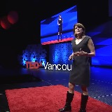
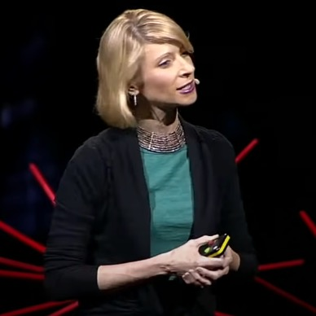

The little risks you can take to increase your luck · Tina Seelig
Luck can be cultivated by noticing opportunities, taking small risks, and changing how we engage with unfamiliar people and situations.
Learning through explanation
I often understand an idea better after rebuilding it and explaining it in my own words. This collection contains study notes, technical writing, and book projects in development.

The Feynman Technique
Knowledge comes not only from input but also from output. I find the best way to build up my research toolbox is to summarize an idea in my own words and introduce it to others as simply as possible.
These living notes collect foundations I return to across mathematics, machine learning, and robot autonomy.
Book project in progress
The habit behind these notes is growing into a developing synthesis of robotics, control, and learning concepts informed by my coursework and research. I want to make the connections between representation, decision-making, and physical execution easier to navigate for someone beginning research in robot learning.
Book project in progress
A writing project connecting product design, interaction, implementation, and deployment, drawing on my work building Elucigate.
From my original website
I hope everyone who stops by can find some positive energy or a useful takeaway. These are talks I have returned to for perspective on opportunity, learning, and confidence.
Luck can be cultivated by noticing opportunities, taking small risks, and changing how we engage with unfamiliar people and situations.

Learning and new experiences reshape the brain. The talk connects neuroplasticity with the possibility of changing our abilities through sustained practice.

A reflection on how posture and nonverbal behavior can influence how others perceive us—and how we perceive ourselves.